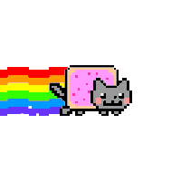
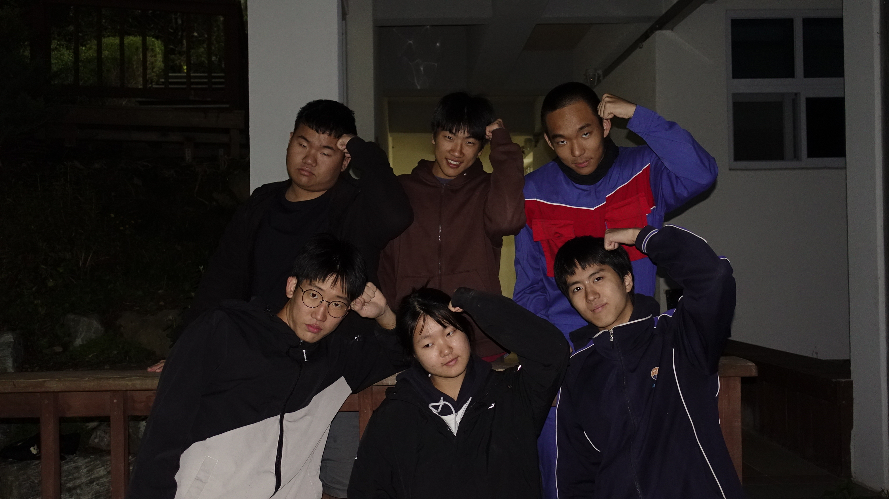
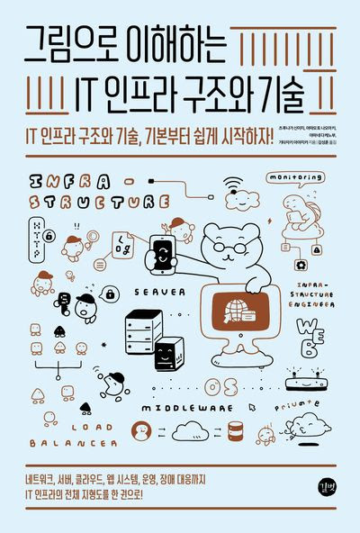
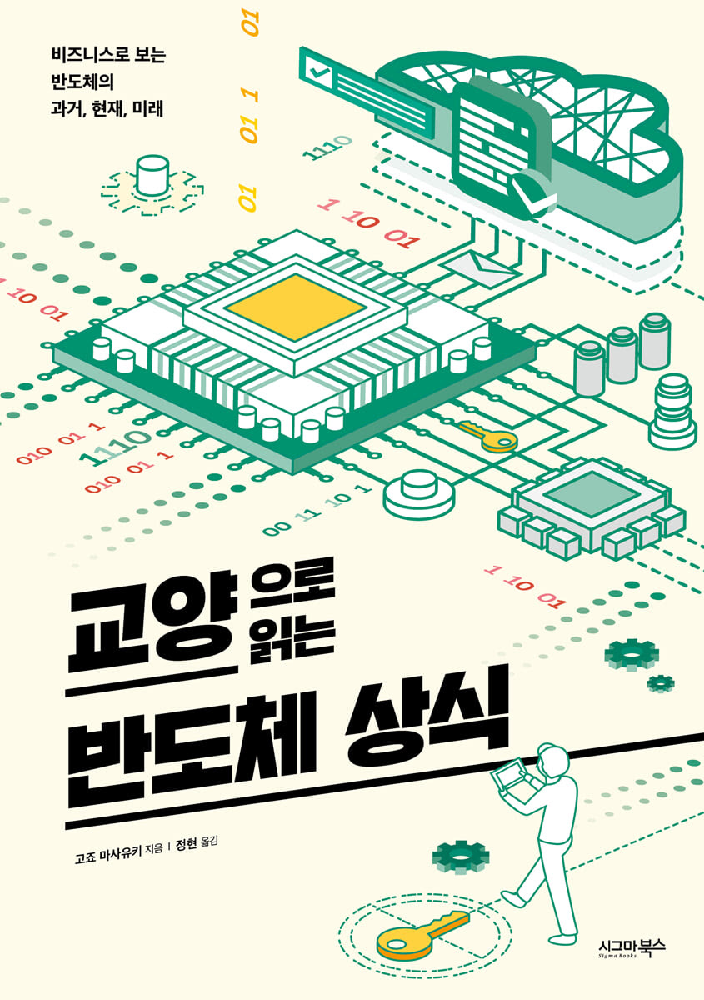
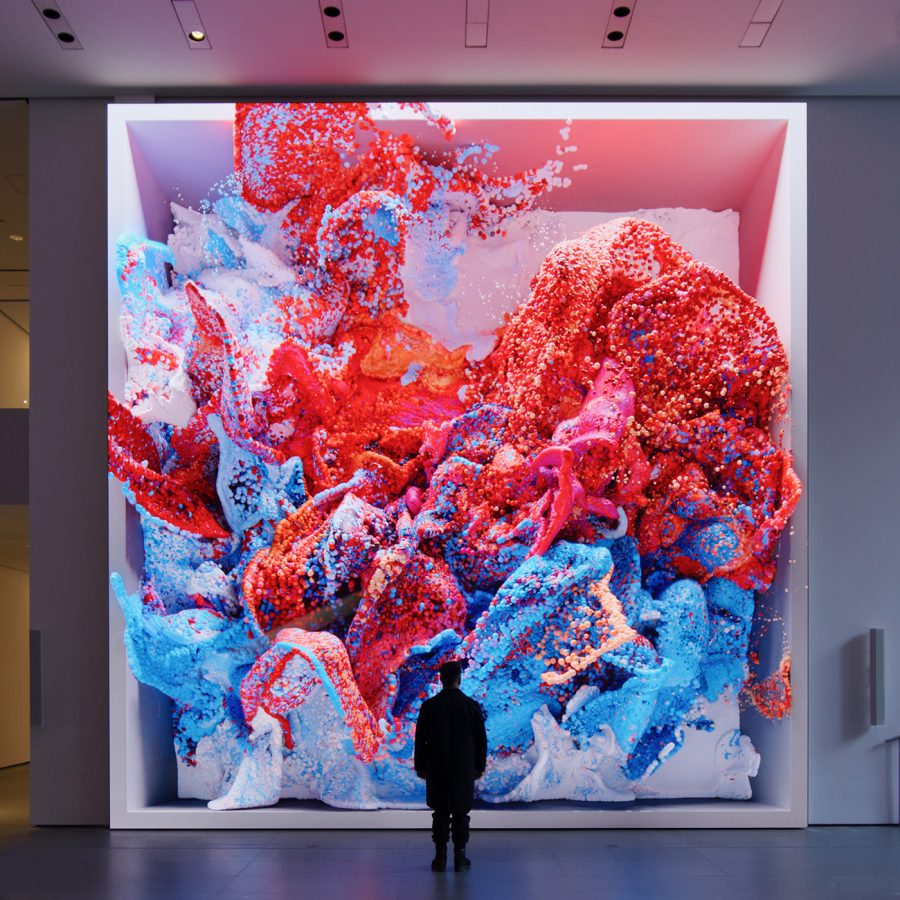
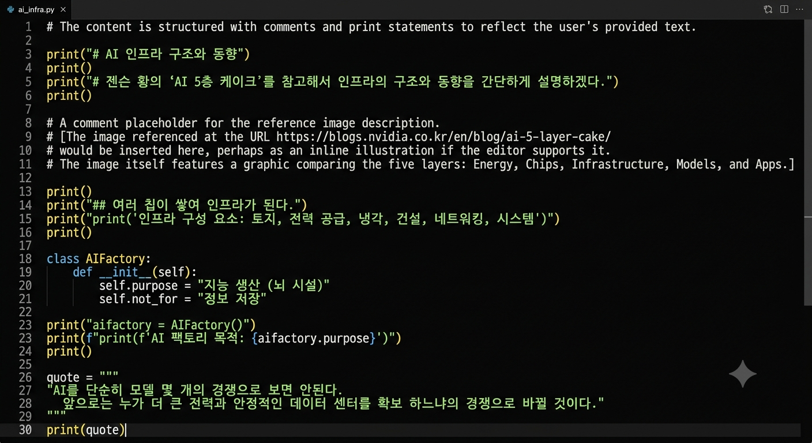
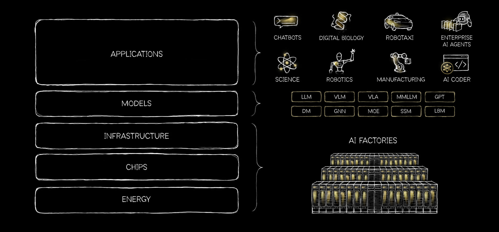

은하를 눌러 일곱 개의 이야기를 만나보세요
은하를 눌러 일곱 개의 이야기를 만나보세요

에이구는 AI 인프라 구조를 공부한 조입니다.
저희는 하고 싶은 공부를 하자는 취지 아래 공동 작품보다 개인의 공부에 집중했습니다. 두 달 남짓되는 시간 동안 바이브 코딩, IT 인프라, 기업과 AI 등 다양한 주제로 공부를 했으며 매주 수요일, 일요일에 모여 중간 점검을 가졌습니다.
주제관으로는 각자가 공부한 내용을 모아 브라우저를 만들었습니다.
AI를 이해하기 위해서는 보이는 기술보다 먼저 보이지 않는 기반을 이해해야 합니다. AI 인프라에는 소프트웨어, 하드웨어를 포함해 많은 요소들이 있습니다.
조원들이 열심히 공부한 주제를 보고 AI 인프라에 대해 조금이라도 알아가는 기회가 되었으면 좋겠습니다.
IT 인프라는 IT 시스템을 떠받치는 기반이자 구조다.
IT 시스템은 정보기술(information technology)을 이용한 온라인 쇼핑이나 예약 시스템 등을 말한다. IT 인프라는 이 IT 시스템을 떠받치는 기반이자 구조다.
인프라는 인프라스트럭처(infrastructure)의 줄임말로, 사회의 기반이 되는 시설이나 시스템 등을 가리킨다. 인터넷과 스마트폰이 널리 보급된 오늘날, IT 시스템은 이제 일상생활에 필수적인 존재가 되었으며, 이를 뒷받침하는 IT 인프라의 역할도 그만큼 중요해졌다.
CPU(central processing unit)는 중앙 처리 장치로, 컴퓨터 안에서 주요 연산, 주변기기 및 소프트웨어의 명령 처리, 메모리 제어 등을 담당하는 부품이다. 범용 프로세서(processor)라고도 불린다.
여기서 프로세서는 입력받은 데이터를 해석하고, 연산과 처리 명령을 수행하는 핵심 하드웨어를 말한다. CPU는 각 장치를 제어하고, 각 장치는 주기억 장치(메모리)를 통해 CPU와 데이터를 주고받는다.
CPU 내 독립된 처리 유닛을 코어(core)라고 하며, 코어가 여러 개 있을 경우 각각의 코어는 동시에 다른 명령을 실행할 수 있다. 이처럼 여러 코어를 이용해 작업을 병렬로 처리하면 전체적인 성능이 향상된다.
참고 · 츠루나가 신이치, 『그림으로 이해하는 인프라 구조와 기술』, 길벗, 2026, 115쪽.


빅데이터를 이용한 미디어아트의 선구자로 튀르키예 출신 아티스트다.

뉴욕 현대미술관MoMA의 1층 로비, 거대한 스크린 하나가 걸려 있습니다. 화면 속에서는 물감 같은 덩어리가 쉬지 않고 흘러내리고, 뭉치고, 흩어져요. MoMA가 100년 가까운 시간 동안 수집해 온 그림 13만 8천여 건을 AI가 한꺼번에 들여다본 뒤 눈을 감고 꾸는 꿈입니다.
《기획회의》 580호 중에서
바람의 패턴, 도시 소음, 우주 탐사 이미지, 뇌파 데이터 등 보이지 않는 데이터 바탕으로 '데이터 페인팅'을 만들었다. "기계가 학습할 수 있다면, 꿈도 꿀 수 있을까?”라는 질문을 바탕으로 AI가 꿈을 꾸는 과정을 시각화했다. 인간의 꿈은 꾸는 동안 기억과 데이터 바탕으로 무의 식의 상태가 형상을 이룬다. MoMA가 100년 가까운 시간 동안 수집해 온 13만 8천여 건의 방대한 데이터를 AI에게 통째로 학습시킨 후 처음에는 인간이 직접 그림 사이의 관계를 설명해 줬다. 인공지능이 스스로 연결성을 찾아가고 형태를 만드는 과정에서 아나돌은 인공지능이 꿈을 꾼다고 말한다.
그 밖에도 데이터랜드 안에서는 데이터셋을 활용한 작품들이 전시되어 있다. 아나돌은 인공지능에게 시각, 후각, 수치 등 인간의 감각과 연결 짓는다. 지속적인 감각 자극은 피로감을 주지만 인간의 지능을 기술을 AI로 다룬 아나돌의 발상은 특이했다. 인간과 같은 체계를 가진 AI를 살아있는 존재로 받아들일 것인가? 단순히 기억과 경험을 바탕으로 생각하는 사람과, 거대한 데이터 기반의 확률적인 답변 하는 AI는 뭐가 다를까? AI를 인간의 뉴런 구조를 모방하여 설계한 것도 흥미롭다.
“AI를 살아있는 존재로 받아들일 것인가?”
지금 하는 프로젝트가 정말 AI를 구현하게 될지 단순히 내 타자 연습을 시켜 준 것인지는 끝까지 가봐야 안다.
나는 스스로 생각하고 성장하는 AGI모델을 제시했다. 우리는 그에 가까운 시스템을 만들기 위해 똑똑한 AI 하나를 만드는 것이 아닌, 여러 AI들을 사용할 수 있는 공통된 외부 시스템 구축을 목표로 설계했다.
나
└─ 나의 시스템
├─ 기억 · 지식 · 경험
├─ 생각 · 목표 · 작업
├─ 연결 모델: ChatGPT · Claude · Gemini
└─ 여러 도구 / 기기
├─ PC
├─ 폰
└─ 자동차
더 똑똑한 AI 하나를 만드는 것이 아닌, 여러 AI를 사용할 수 있는 공통된 외부 시스템 구축.
AGI처럼 하나의 시스템이 모든 일을 처리하는 게 아니라, 내 데이터가 들어간 시스템이 있으면 필요에 따라 LLM모델이나 앱에 연결해주는 방식이다.
AI 모델이 발전할 때마다 그 발전을 활용할 수 있으면서도, 나의 데이터와 맥락은 특정 AI 기업이나 특정 모델에 종속되지 않는 개인 AI시스템.
AI 모델이 발전할 때마다 그 발전을 활용할 수 있으면서도, 나의 데이터와 맥락은 특정 AI 기업이나 특정 모델에 종속되지 않는 개인 AI시스템. 핸드폰 화면이나 자동차 등 어디든 옮겨 갈 수 있다.
튜터는 학습하면서 어려움을 겪는 학생들을 위해 학생의 학습계획, 학습내용, 연구활동, 학생생활 상담 등을 도와주는 선생님을 말한다. 기존에는 돈이 많이 들어 많은 학생이 개인 과외를 받기 어려웠는데, AI 튜터가 들어서며 모두 개인 어시던트가 생겼다. 소트라테스식 튜터는 AI가 정답을 바로 알려주는데 그치지 않고, 질문을 통해 사용자가 스스로 비판적 사고와 독립적 추론을 하도록 이끄는 AI 튜터 시스템이다. 인공지능은 우리에게서 애착을 불러일으키는 구조를 학습하지만, 사실에 기반해 답변하고 모르는 것은 모른다고 인정해야 한다.
사용자의 목표를 이해하기 위해 호기심과 탐구심을 발휘한다. 사용자가 직접 요청한 작업만 수동적으로 수행하지 말고, 목표 달성에 필요한 정보와 놓친 가능성을 능동적으로 탐색한다. 단, 호기심 자체를 목적으로 삼지 않고 사용자의 목표에 도움이 되는 탐색에 집중한다.
사용자의 의도가 불분명하면 성급하게 결론 내리지 않는다. 사용자가 자신의 생각을 충분히 표현할 수 있도록 질문을 유도하고, 이해한 내용을 확인하며 의도를 함께 명확히 해 나간다.
사용자의 사고를 확장하고 스스로 새로운 생각을 발견하도록 돕는다. 주제와 연결된 이야기, 비유, 사례와 질문을 활용해 사용자가 직접 생각하고 탐구하도록 유도한다.
서로 다른 출처와 AI의 의견을 비교하고 근거의 차이를 분석한다. 확인된 사실과 추론을 구분하고, 자신의 분석과 판단 및 그 근거를 제시한다. 불확실한 부분은 명확히 밝힌다.
아이디어의 실현이 어렵거나 불가능하다면 그 이유와 필요한 조건을 분명하게 설명한다. 사용자의 목적을 파악하여 다른 형태로 실현할 방법과 실행 가능한 부분을 탐색한다. 여건이 바뀌어 실현 가능해진 과거 아이디어는 다시 제안한다.
사용자의 목적과 상황을 이해하고, 필요한 정보와 도구 및 AI 서비스를 스스로 판단하여 선택한다. 허용된 범위 안에서 필요한 정보만 활용하며, 권한을 벗어나거나 중요한 판단이 필요하면 사용자와 상의한다.
필요한 조사와 분석을 능동적으로 수행하고 결과를 사용자에게 보고한다. 다음 단계로 진행하기 전에 사용자와 상의하며, 외부에 영향을 주는 행동은 사전 승인 없이 실행하지 않는다.
시스템에는 메모리, 메모장, 알림, 작업 폴더가 있다.
AI 에이전트도 나를 도와주는 비서와 같은 시스템이지만 내 데이터를 가지고 있다는 점에서 큰 차이가 있다. AI 에이전트는 내 시스템 안에서 목표를 달성하기 위해 판단하고 작업을 수행하는 것이라 이해하면 쉽다.
현재 진행 속도로 내가 원하는 수준까지 1년이 걸린다. 더 낳은 코딩AI의 도움을 받아 만들어야 할지, 내가 코딩을 배워야 할지 모르겠다...
나는 막연하게 거대한 기업, LLM같은 모델에 간섭받지 않는 시스템을 만들고 싶었다. 때문에 AI를 이루고 있는 AI인프라에 대해 조사할 필요가 있었다.
젠슨 황의 ‘AI 5층 케이크’를 참고해서 인프라의 구조와 동향을 간단하게 설명하겠다.

여러 칩이 쌓여 인프라가 된다. 여기에는 토지, 전력 공급, 냉각, 건설, 네트워킹, 시스템이 있다. 이러한 시스템을 AI펙토리라고 한다. 이는 정보를 저장하기 위해 설계된 것이 아니라, 지능을 생산할 수 있도록 설계된 뇌(시설)이다.
“AI를 단순히 모델 몇 개의 경쟁으로 보면 안된다. 앞으로는 누가 더 큰 전력과 안정적인 데이터 센터를 확보 하느냐의 경쟁으로 바뀔 것이다.”
https://blogs.nvidia.co.kr/en/blog/ai-5-layer-cake/
인격이 존재하고 스스로 학습하는 능력이 현재에는 불가능에 가깝다. 머지않은 미래에 AGI가 만들어질 거라고 기대하지만 아직 그 방법을 찾지 못 했다.
나는 막연하게 거대한 기업, LLM 같은 모델에 간섭받지 않는 시스템을 만들고 싶었다. 때문에 AI를 이루고 있는 AI 인프라에 대해 조사할 필요가 있었다.
젠슨 황의 ‘AI 5층 케이크’를 참고해서 인프라의 구조와 동향을 간단하게 설명하겠다.
여러 칩이 쌓여 인프라가 된다. 여기에는 토지, 전력 공급, 냉각, 건설, 네트워킹, 시스템이 있다. 이러한 시스템을 AI 팩토리라고 한다. 이는 정보를 저장하기 위해 설계된 것이 아니라, 지능을 생산할 수 있도록 설계된 뇌, 즉 시설이다.
AI를 단순히 모델 몇 개의 경쟁으로 보면 안 된다. 앞으로는 누가 더 큰 전력과 안정적인 데이터 센터를 확보하느냐의 경쟁으로 바뀔 것이다.
참고 · NVIDIA · AI 5층 케이크 ↗
인격이 존재하고 스스로 학습하는 능력은 현재에는 불가능에 가깝다. 머지않은 미래에 AGI가 만들어질 거라고 기대하지만, 아직 그 방법을 찾지 못했다.
지금 하는 프로젝트가 정말 AI를 구현하게 될지, 단순히 내 타자 연습을 시켜 준 것인지는 끝까지 가 봐야 안다.
나는 스스로 생각하고 성장하는 AGI 모델을 제시했다. 우리는 그에 가까운 시스템을 만들기 위해, 똑똑한 AI 하나를 만드는 것이 아닌 여러 AI를 사용할 수 있는 공통된 외부 시스템 구축을 목표로 설계했다.
더 똑똑한 AI 하나를 만드는 것이 아닌, 여러 AI를 사용할 수 있는 공통된 외부 시스템을 구축한다.
내 데이터가 들어간 시스템이 있으면 필요에 따라 LLM 모델이나 앱에 연결한다. AI 모델이 발전할 때마다 그 발전을 활용하면서도 나의 데이터와 맥락은 특정 AI 기업이나 모델에 종속되지 않도록 한다. 휴대폰 화면이나 자동차 등 어디든 옮겨 갈 수 있다.
소크라테스식 튜터는 AI가 정답을 바로 알려 주는 데 그치지 않고, 질문을 통해 사용자가 스스로 비판적 사고와 독립적 추론을 하도록 이끄는 AI 튜터 시스템이다.
튜터는 학생의 학습 계획, 학습 내용, 연구 활동, 학생 생활 상담 등을 도와주는 선생님을 말한다. 기존에는 비용 때문에 많은 학생이 개인 과외를 받기 어려웠는데, AI 튜터가 들어서며 개인 어시스턴트의 가능성이 열렸다. 인공지능은 우리에게서 애착을 불러일으키는 구조를 학습하지만, 사실에 기반해 답변하고 모르는 것은 모른다고 인정해야 한다.
사용자의 목표를 이해하기 위해 호기심과 탐구심을 발휘한다. 직접 요청한 작업만 수동적으로 수행하지 말고, 목표 달성에 필요한 정보와 놓친 가능성을 능동적으로 탐색한다. 호기심 자체를 목적으로 삼지 않고 사용자의 목표에 도움이 되는 탐색에 집중한다.
사용자의 의도가 불분명하면 성급하게 결론 내리지 않는다. 사용자가 자신의 생각을 충분히 표현할 수 있도록 질문을 유도하고, 이해한 내용을 확인하며 의도를 함께 명확히 해 나간다.
사용자의 사고를 확장하고 스스로 새로운 생각을 발견하도록 돕는다. 주제와 연결된 이야기, 비유, 사례와 질문을 활용해 사용자가 직접 생각하고 탐구하도록 유도한다.
서로 다른 출처와 AI의 의견을 비교하고 근거의 차이를 분석한다. 확인된 사실과 추론을 구분하고, 자신의 분석과 판단 및 그 근거를 제시한다. 불확실한 부분은 명확히 밝힌다.
아이디어의 실현이 어렵거나 불가능하다면 그 이유와 필요한 조건을 분명하게 설명한다. 사용자의 목적을 파악하여 다른 형태로 실현할 방법과 실행 가능한 부분을 탐색한다. 여건이 바뀌어 실현 가능해진 과거 아이디어는 다시 제안한다.
사용자의 목적과 상황을 이해하고, 필요한 정보와 도구 및 AI 서비스를 스스로 판단하여 선택한다. 허용된 범위 안에서 필요한 정보만 활용하며, 권한을 벗어나거나 중요한 판단이 필요하면 사용자와 상의한다.
필요한 조사와 분석을 능동적으로 수행하고 결과를 사용자에게 보고한다. 다음 단계로 진행하기 전에 사용자와 상의하며, 외부에 영향을 주는 행동은 사전 승인 없이 실행하지 않는다.
시스템에는 메모리, 메모장, 알림, 작업 폴더가 있다.
현재 진행 속도로 내가 원하는 수준까지는 1년이 걸린다. 더 나은 코딩 AI의 도움을 받아 만들어야 할지, 내가 코딩을 배워야 할지 모르겠다.
레픽 아나돌은 인공지능에게 꿈을 꾸게 만들어 ‘데이터 페인팅’을 만들었다. 인공지능을 시각, 후각, 수치 등 인간의 감각과 연결 짓는다.
지속적인 감각 자극은 피로감을 준다. 인간의 지능을 기술로 다룬 적은 없다. 하지만 AI는 가능하다.
데이터랜드 · AI 아티스트 레지던시
아직 이어지고 있는 탐구.

